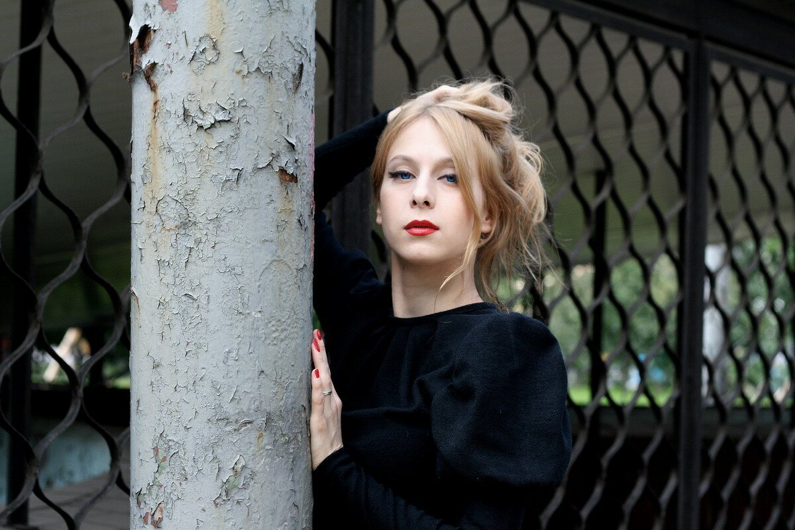
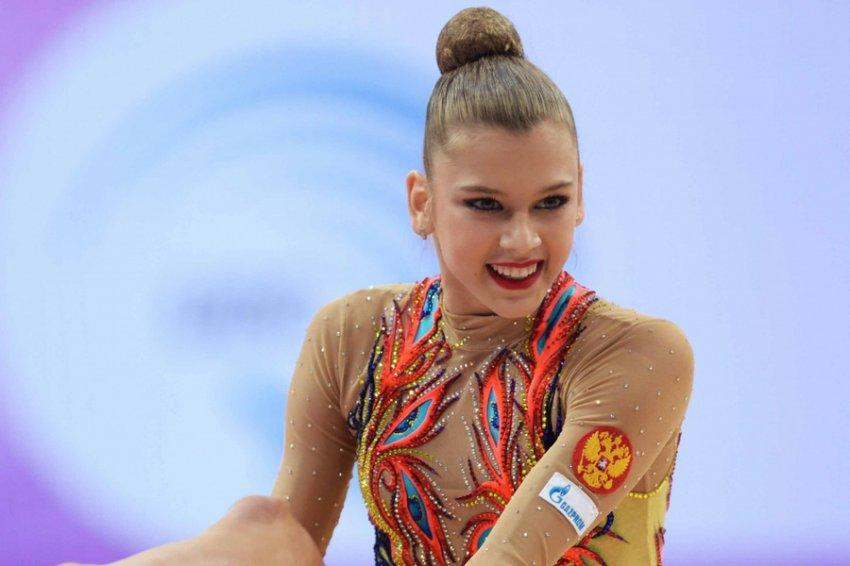

Выдающиеся уроженцы и деятели города, оставившие яркий след в науке, спорте, культуре и искусстве.
Стерлитамак воспитал десятки чемпионов, деятелей искусств, ученых и исследователей, чьи имена известны далеко за пределами Республики Башкортостан.

род. 1954 г. • Эстрадная певица
Родилась в Стерлитамаке. Легендарный голос советской эстрады, исполнительница всенародно любимых песен «Ищу тебя» (из к/ф «31 июня») и прощального гимна Олимпиады-80 «До свиданья, Москва».

род. 1982 г. • Актриса театра и кино
Родилась в Стерлитамаке, выпускница Башкирского республиканского техникума культуры и Театрального института им. Б. Щукина. Яркая актриса театра и кино, полюбившаяся миллионам зрителей по роли Лили Волковой в культовых телесериалах «Универ» и «СашаТаня».

род. 1998 г. • Художественная гимнастика, заслуженный мастер спорта
Родилась в Стерлитамаке, где в возрасте пяти лет начала свой путь в художественной гимнастике. Четырёхкратная чемпионка мира, трёхкратная чемпионка Европы и многократная победительница этапов Кубка мира в индивидуальных упражнениях.

род. 1983 г. • Спортсмен, паралимпийский чемпион
Родился и вырос в Стерлитамаке. Заслуженный мастер спорта России по биатлону и лыжным гонкам, четырёхкратный чемпион Паралимпиады 2010 года в Ванкувере. Почётный гражданин города.

род. 1976 г. • Олимпийская чемпионка, лёгкая атлетика
Родилась в Стерлитамаке, где и начала путь в лёгкой атлетике. Олимпийская чемпионка 2004 года в Афинах, многократная чемпионка мира в прыжках в длину и тройном прыжке, заслуженный мастер спорта России.

род. 1991 г. • Видеоблогер, кинообозреватель
Родилась в Стерлитамаке. Ведущий популярнейшего авторского канала «BadComedian», один из самых известных и влиятельных кинокритиков и видеоблогеров Рунета с миллионной аудиторией.
Знаете известного уроженца или жителя Стерлитамака, которого ещё нет в нашем каталоге? Нажмите кнопку ниже, заполните форму, и после проверки модератором статья появится на портале.